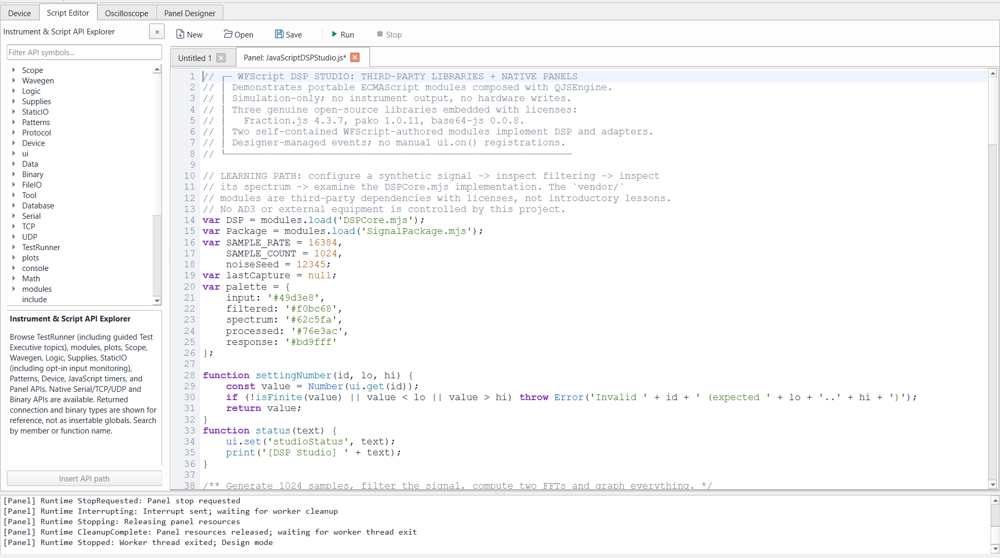

Chapter 4 — JavaScript, callbacks and modules

Write JavaScript to describe behavior, not to redraw widgets or poll every property continually. Most useful Panel scripts define a few constants, subscribe to genuinely asynchronous services, and expose named handlers for saved events.
The JavaScript editor includes syntax highlighting and integrated API exploration. API documentation and autocomplete are aids, not proof that a device supports every possible setting. Validate parameter ranges and read errors back from the actual bridge.
A readable startup structure
var refreshTimer = 0;
function onInitialize() {
ui.set('statusLabel', 'Ready');
// Start services only when this Panel needs them.
}
function onRefreshClicked() {
ui.set('statusLabel', 'Refresh requested');
}
function onShutdown() {
if (refreshTimer) clearInterval(refreshTimer);
}
The lifecycle hooks are optional and enabled in Panel properties where appropriate. Clean up timers and application sessions explicitly if you own them. The native runtime also manages certain resources as part of a normal stop, but an application's physical equipment state should never depend on a JavaScript handler being guaranteed after a sudden failure.
Modules versus classic includes
Use modules.load('MathTools.mjs') for a modern embedded module with named exports. Use include('Helpers.js') for a classic script where appropriate. The two are not interchangeable with Node's package loader. A Panel may embed .mjs libraries so it can open on another computer without requiring the original external source tree.
var dsp = modules.load('DSPCore.mjs');
var magnitude = dsp.magnitude(samples);
The example shows the call shape; DSPCore.mjs must be present in the Panel or a supported library location, and its actual export names must match the module. The bundled JavaScript DSP Studio demonstrates a source-backed module workflow.
Timers are cooperative
setTimeout() and setInterval() use Qt's event loop in the Panel worker, with clearTimeout() and clearInterval() for cancellation. Intervals are best-effort; do not use them as a hard real-time clock or as a substitute for sample-accurate hardware capture.
var updates = 0;
var timer = setInterval(function() {
updates++;
ui.set('counterLabel', 'Update ' + updates);
}, 250);
// Later: clearInterval(timer);
Use Scope1 or Logic1 for hardware-timed capture, not a setInterval() that toggles a DIO output and assumes microsecond accuracy.
Error handling and console output
A value that looks numeric may be an overload, a disconnected measurement, or a failed query. Convert and validate explicitly. Use print(), console.warn() and console.error() where supported, then give the operator a concise status in the Panel. The Console can be filtered without erasing the original output history.
For asynchronous work, the error belongs in the callback or Promise rejection. A try/catch around the code that schedules a network request cannot catch a failure that arrives later unless that failure is explicitly propagated into a Promise chain.